Abstract
JobQuery is designed to streamline and elevate the job search process for early career professionals. Targeting top internships and opportunities for current college students and new graduates, JobQuery specifically addresses the unique challenges faced by this demographic. Developed by a team of students who deeply understand the rigors of job hunting, JobQuery aims to transform this daunting process into a seamless and rewarding experience.
Steps for running locally:
-
Step 1: Obtaining JobQuery source code
Start by downloading or cloning our repo which can be found here.
-
Step 2: Running the backend
Our backend uses FastAPI which is built on Python. To run the backend, first ensure you have python and poetry installed. After installing these dependencies, navigate to the backend folder and create a poetry shell with
poetry shelland install all project dependencies usingpoetry install. After this, run the following command:uvicorn main:app --reloadto start the backend server. -
Step 3: Running the frontend
Our frontend uses React. First ensure you NPM installed. After installing NPM, navigate to the frontend folder and run the following command:
npm installto install all project dependencies. After this, runnpm run devto start the frontend server. After this, navigate to localhost:5173 (or use whatever port it indicates) to view the frontend.
If you do not want to run locally:
Visit our deployed version of jobquery here.
How to use JobQuery:
-
The Homepage
After visiting jobquery, you will be greeted by the homepage. Until you login there isn't much functionality offered besides being able to look through the job listings. However, after logging in you will be greeting with a variety of features that can be accessed via the Menu Bar.
-
Logging In
To login into jobquery, press the blue "Login" button that can be see in the top right corner of the page.
After logging in, you will notice some changes to the homepage such as new access to the Menu Bar. This offers new additional features. Continue reading the tutorial to find out how to access and use each of these features.
-
Saving Jobs
While looking through the list of job listings, you may find that you want to save a job to apply to later. This can be done by clicking the "Save Flag" that is in the top right corner of every job listing in the list of jobs seen on the left side of the homepage.

A blue "Save Flag" indicates that the job is currently saved, while a clear "Save Flag" indicates that the job is not currently saved. To access all your saved jobs go to the "Saved Jobs" page via the Menu Bar. The saved jobs gives additional options (continue reading to learn what these buttons do) and looks like this:

You can easily apply a saved job by clicking "Apply" which brings you to the job's application page, or you can remove a saved job by clicking "Remove". The "CL" button and "Compare" buttons are covered in other sections of this tutorial.
-
Using the Menu Bar and Dropdown
To access features beyond what is offered by the homepage, you will need to use the dropdown menu which can be opened by clicking your profile picture in the top right corner of the page:

-
AI Resume Helper
If you need help crafing your resume, go to the "Resume Helper" page in the dropdown menu. From here you can upload either an image (png, jpg, jpeg, etc.) or a pdf of your resume to get a list of suggestions on how to improve your resume. Start by clicking the "Choose File" button:

After choosing your resume file, click the submit button. From here it will use AI to provide a list of suggestions on what you need to improve in your resume using direct context it obtains from the provided resume.
-
Job Application Tracker
If you have applied to a lot of jobs at one time, you have probably had a cluttered spreadsheet or text document to keep track of each of the jobs you have applied to and the application's status. JobQuery makes this easier by allowing users to track their application from the site. From the dropdown menu, click "My Applications" to be brought to the application page which looks like this:
Use the "Add New Job" box at the bottom of the page to add jobs you have applied to:
Click the "Edit" button on any of the job listings to add additional information. Or click the "Expand" button to reveal additional fields for each tracked application, click "Expand" will make tracked application in the list look like this:
Clicking "Collapse" will close the extended view. Clicking "Edit" will make each field for the application editable. Clicking "Save" will save any changes you have made.
-
AI Cover Letter Generator
Having a good cover letter is critical for obtaining interviews. To generate an AI generated cover letter, first save a job from the Homepage (see tutorial point 2). After saving the job, go to the "Saved Jobs" page from the dropdown menu. To generate a cover letter click the green "CL" button. After this you will confirm your decision to generate a cover letter.
After the CL is generated, you will get a confirmation. After receiving confirmation, you can go to the "My Cover Letters" page to see the generated cover letter. This page will look like this:
From this page you can either edit the cover letter you generated (see tutorial step 8) or download or delete the existing cover letter.
-
Editing a Cover Letter
If you are not fully satisfied with the cover letter that has been generated, you can click the "Edit" button on any cover letter in the "Cover Letter Dashboard" page to edit the cover letter. This will bring up an editor with the cover letters contents that looks like this:
The editor gives a variety of options such as bold, underlining, font size, headers, etc. After editing the cover letter, click the "Save" button to save the changes you have made. You can also click the "Close" button to close the editor.
-
Resume Folder
To manage your resumes, start by uploading one by clicking the "Choose File" button to select a file from your computer, followed by clicking the blue "Upload" button. Once uploaded successfully, your resume will appear in the list below. If you want to preview an uploaded resume, simply click the "View" button next to it to open it directly in your browser. To remove a resume that you no longer need, click the red "Delete" button and confirm your choice to permanently delete it. If you need to save a copy of a resume to your computer, click the green "Download" button to download it.
-
Set Reminder
To manage your events, start by creating a new one. Fill in the title, description, location, start time, and end time in the form. You can also set a reminder by entering how many minutes before the event you want to be notified and adding your email in the "Reminder Email" field. Once the form is complete, click the blue "Create Event" button to save it. Your event will then show up in the "Upcoming Events" section on the right, where you can see its details, like location, start time, and end time. If you need to make changes, click the yellow "Edit" button. If you don’t need the event anymore, click the red "Delete" button to remove it. You’ll also get an email reminder at the set time to help you stay on track and not miss anything important.
-
Review Company
To leave or read reviews for a company, start by checking if the company is already listed. If it isn’t, click the "Add New Company" button on the left side and enter the company's name, location, and industry to add it to the list. Once the company is listed, click on it to view more details like its description, location, and website. To read reviews, scroll to the "Ratings" section, where you can see ratings, comments, and usernames from other users. To share your own review, select a rating from 1 to 5, write your comments, and submit them. The average rating and total number of reviews will be shown at the top of the "Ratings" section.
-
Profile Page
The profile page allows you to update and input information about yourself as you see fit. It also has options on the left to take you to different pages that are related to your profile, such as viewing your uploaded resumes, changing your email, and changing your password.
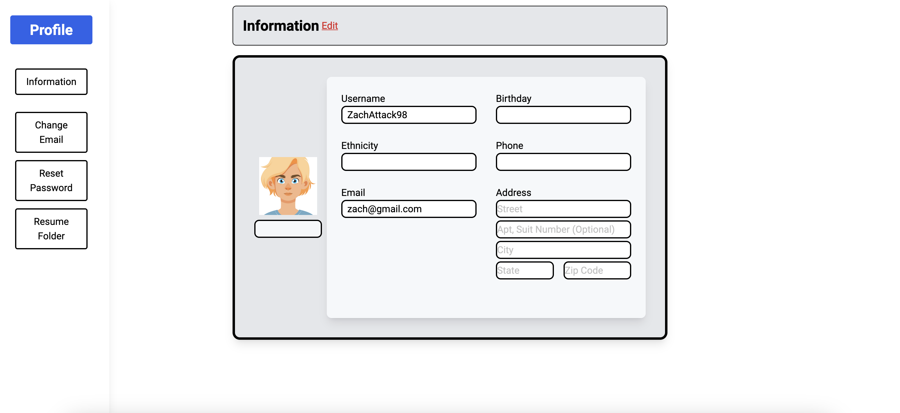To edit information on this page, click on the edit button next to the "Information" header and you will be able to change current information or add new information for all fields besides username and email.
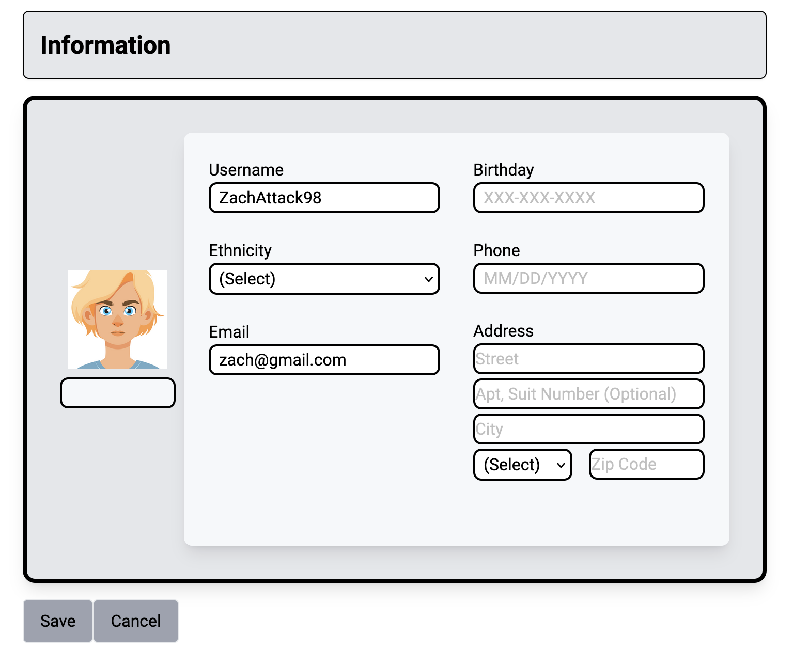Once you have finished updating your information, you can click the save button to save the new info and exit edit mode. If you have decided against updating information or clicked edit on accident, you can just click the cancel button to exit edit mode.
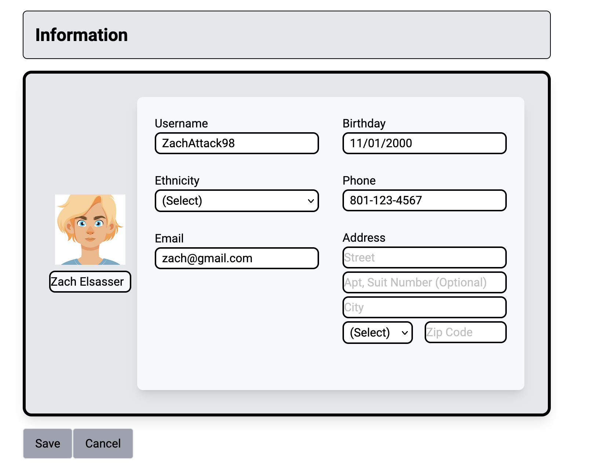 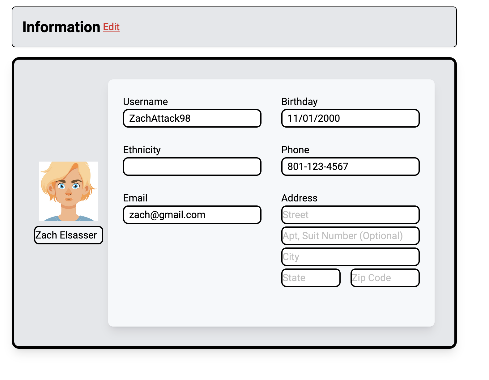 -
Interactive Map
If you would like to see an interactive map that shows where all the jobs are located and lets you filter the options, click on the map button.
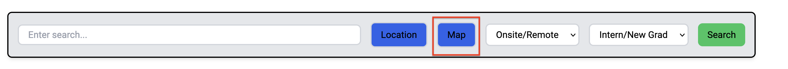The interactive map has a location search bar as well as a search bar for job keywords and other filters that you can apply. Next to the map it lists all the available jobs.
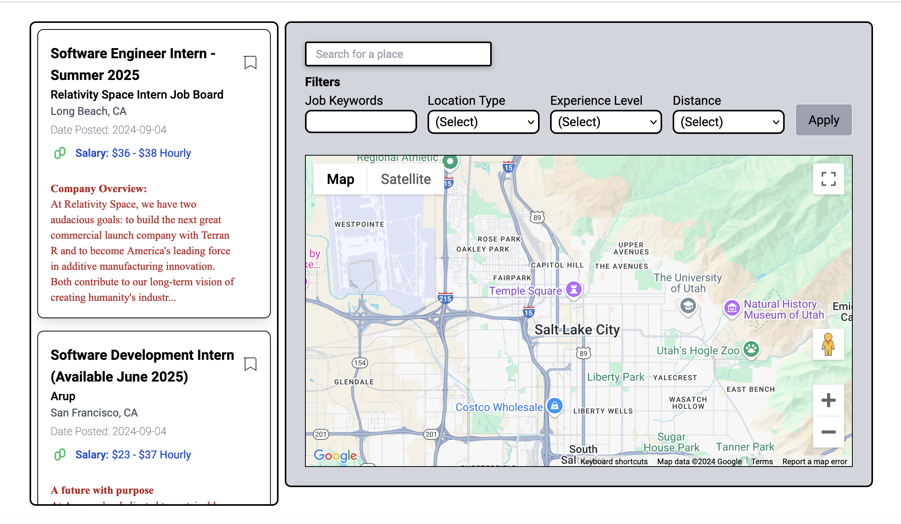To focus the map on a different area, type the location in and either select it from the suggestions or press enter when you have typed the address in.
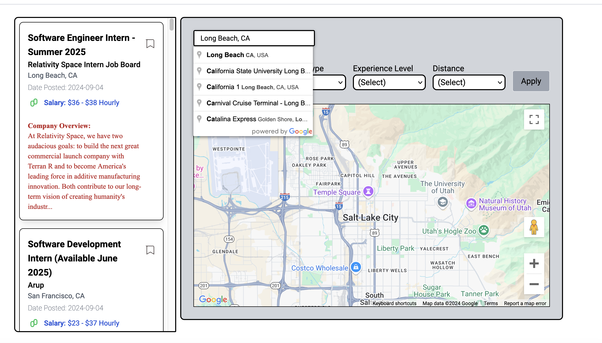 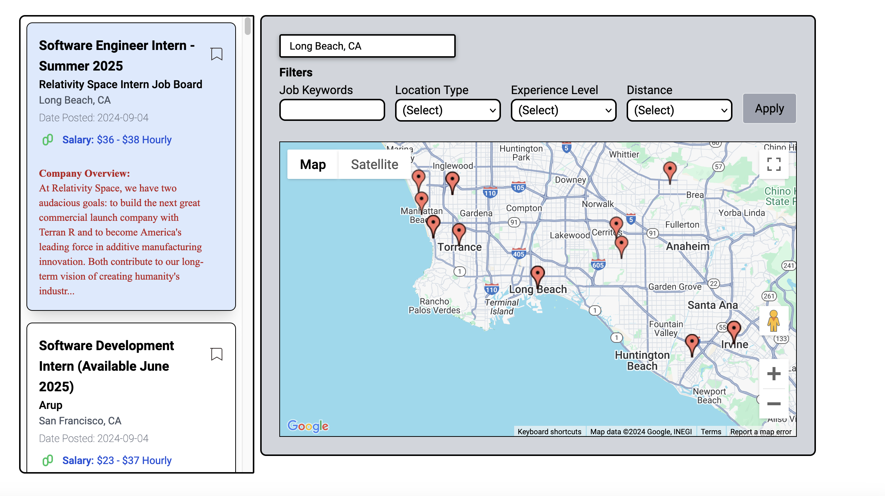To see where a specific job is on the map, you can just click on the job card for it. To show all other jobs again just click that same job card again.
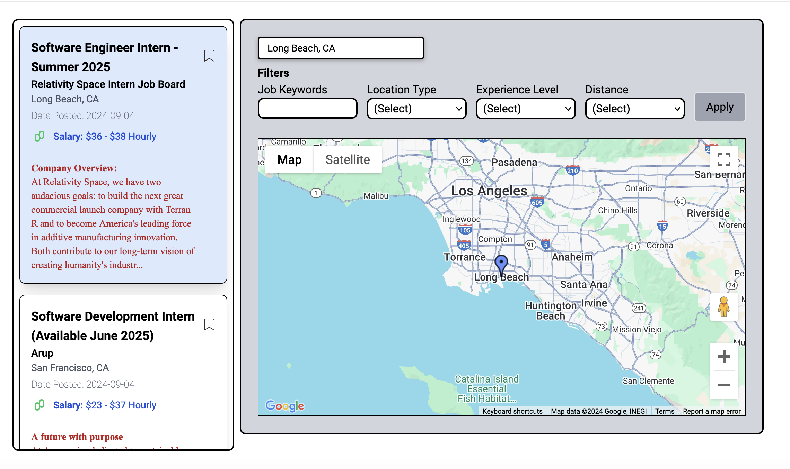If you would like to narrow down what jobs are shown, you can use the filter bar and then click apply. If no results are found to match, the job list on the left will update to reflect that but the markers on the map will not. To clear the filters you will need to reset all filters to their default value and then click apply.
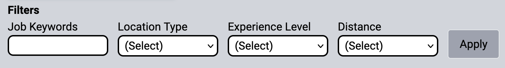 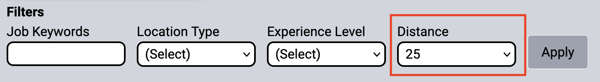 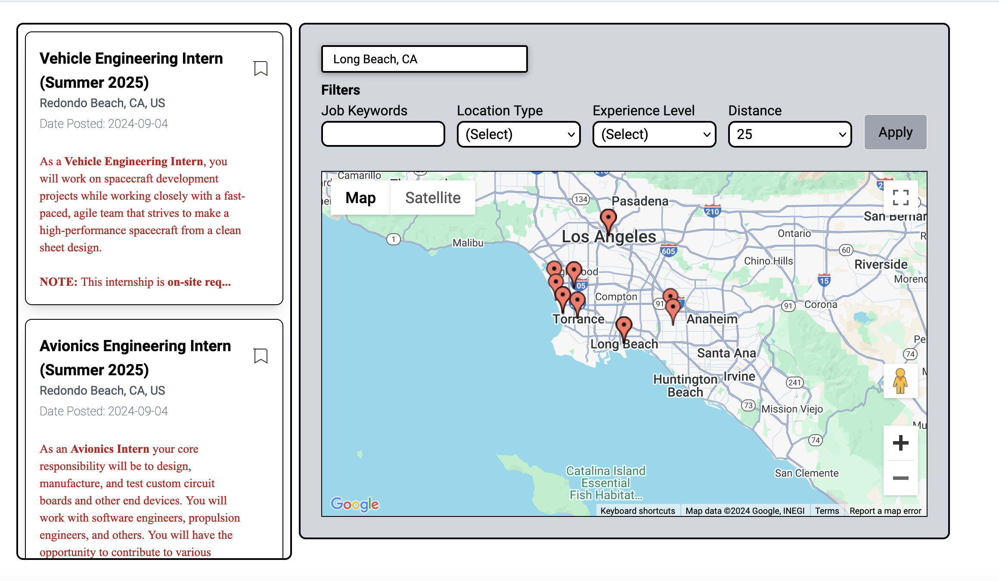 -
Employer Portal
If you loggin as Employer/Company, you will be able to see a different portal. After login as employer you will see the employer "dashboard" and "employer / post job" options.
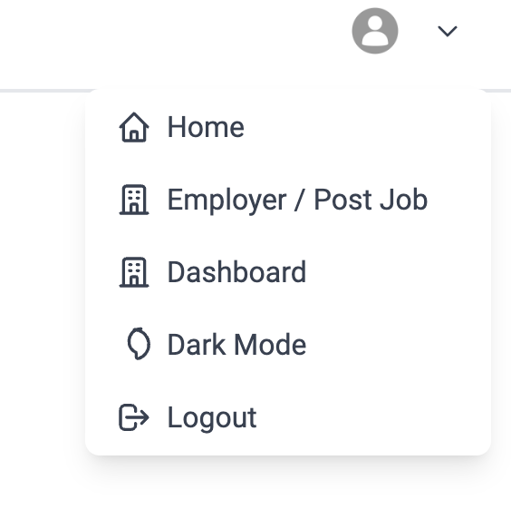After you clicked on "employer / post job" via dropdown menu, it will redirect you to the job posting page, and the employer can post job after they fill up the information of the job / position.
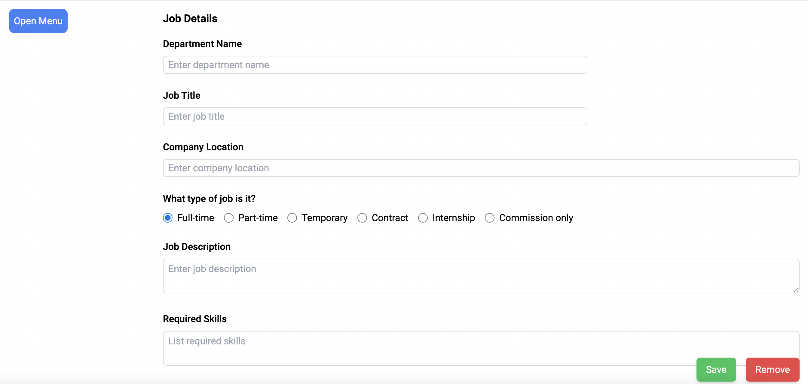Employer can post job by input the position information, after employer fill up all the section they can save the information or remoove it. Also, they can use the top left floating menu to jump to the section and change the information.
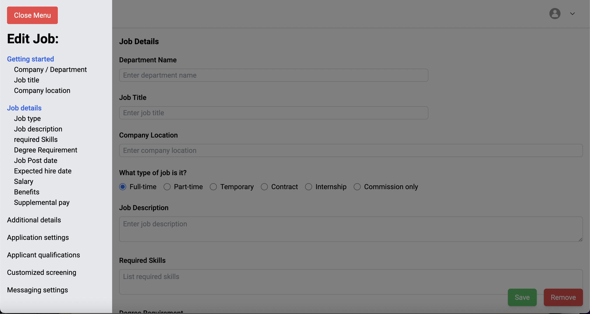After the employer posted the job, they can redirect to the dashboard via top right dropdown menu and they can remove the job post or edit it through the dashboard.
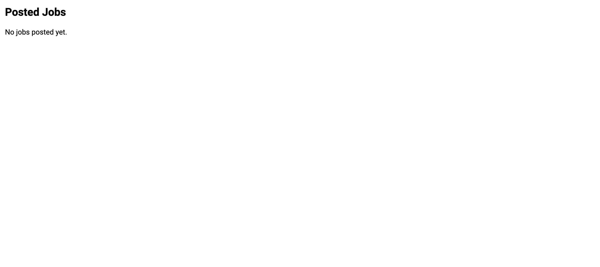